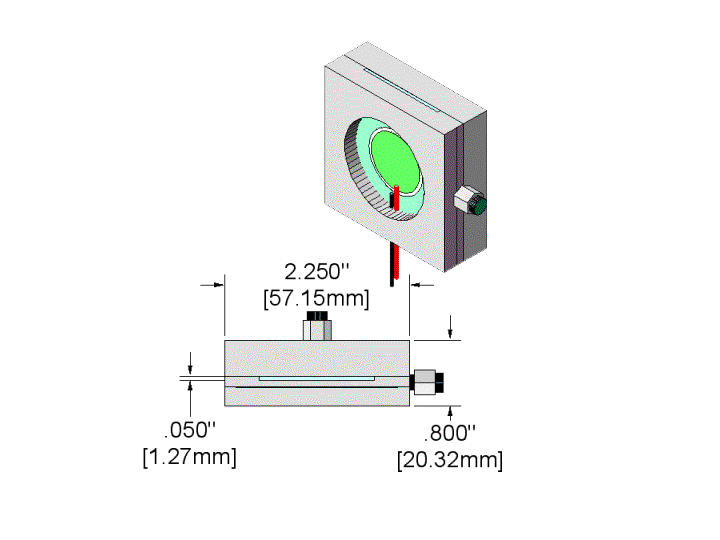
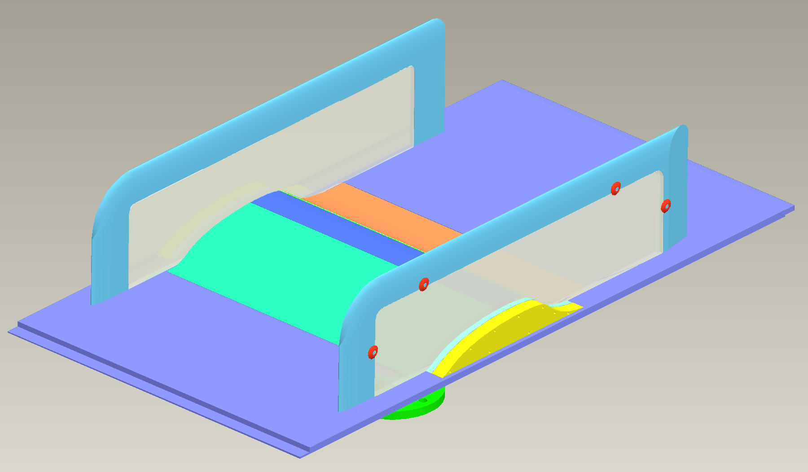
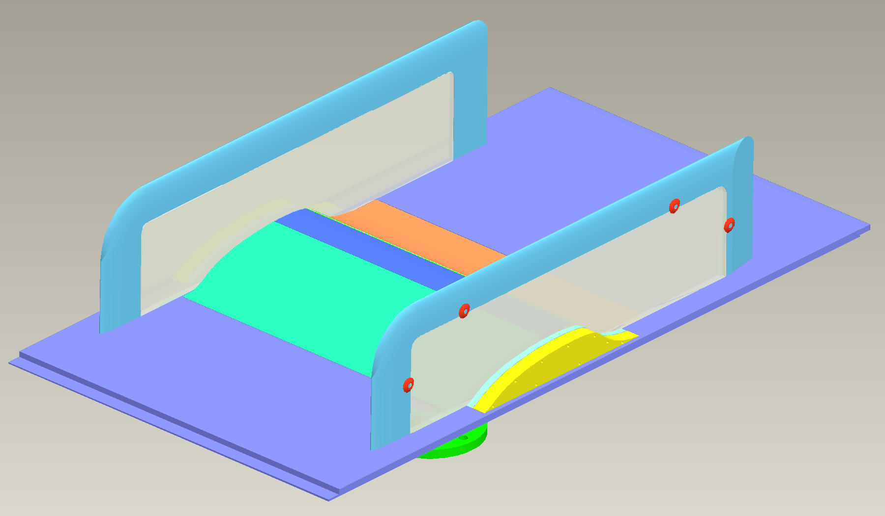

Public Access (formerly Langley Research Center)Turbulence Modeling Resource |
Exp: CFDVAL2004 Data from Workshop on CFD Validation of Synthetic Jets and Turbulent Separation Control
Return to: Data from Experiments - Intro Page
Return to: Turbulence Modeling Resource Home PageThese experimental data are from
a workshop held March 29-31, 2004, at the Woodlands Hotel and Conference Center
in Colonial Williamsburg, VA. The workshop title was "CFD Validation of Synthetic Jets
and Turbulent Separation Control", held by the NASA Langley Research Center in association with
AFOSR, ERCOFTAC, IAHR, QNET CFD, and NIA.
The data contained here previously were housed at a different website
(https://cfdval2004.larc.nasa.gov/), but now have been moved to this site.

There are 3 test cases:
Other available information:
Return to: Data from Experiments - Intro Page
 

Page Curators: Christopher Rumsey,
Ethan Vogel,
Clark Pederson
Last Updated: 05/15/2021